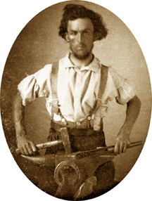
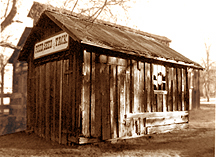
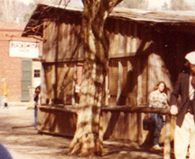
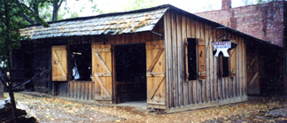
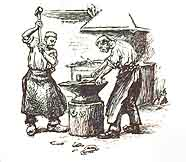
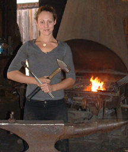

There were also livery stables and wheelrights who carried on a business that would have hired men that were good at forming hot steel. Another blacksmith started where the City Hotel Lobby is today. Originally the lot is owned by Isaiah F. and Levi E. Colburn.
1852 The lot sells to Mitchell Coleman and John Mooney. It may have been a blacksmith shop.
1852 The Columbia Gazette for November 20, claims 6 blacksmiths in town.
1853 Coleman sells the business to Austin Smith, a master blacksmith from Vermont.
1854 Coleman deeds the property to Gordon and Austin Smith they have a blacksmith shop.
1856 Austin Smith & Co. run an ad in the Businessmen's Directory, located on Main above State Street.
1856 Campbell & Hedden was another blacksmith shop doing work on Broadway opposite the Masonic Hall and they run an ad in the Businessmen's Directory.
1856 John S. Canon was a wheelright and carriage maker on Main Street. His ad in the Businessmen's Directory.
1860 Census reports lists these 15 blacksmiths in Columbia:
J. W. Haskell age 30 from Maine worth $3300.
William Petty age 26 from New Jersey worth $350. (living with Mr. & Mrs. Haskell)
Daniel Kenedy age 29 from Nova Scotia worth $1400.
Daniel Sutherland age 28 from Nova Scotia.
Jacques Eitenne age 57 from France worth $500.
R. W. Ford age 26 from Maine.
George Varney age 54 from Maine.
Henry Harter age 51 from New York worth $600.
Hugh Canavan age 38 from Ireland worth $600.
Isaac Brink age 62 from Virgina worth $800.
Austin Smith age 30 from Vermont worth $1500.
John Ferguson age 45 from Virginia worth $1000.
John Wentz age 35 from France worth $1000.
James Cooper age 25 from New York.
J. S. Sullivan age 35 from Pennsylvania worth $1000.
from research notes of Bill Prindle

PARROTT'S BLACKSMITH
P.O. Box 1555
Columbia, California 95310
(209) 532-4474
This page is created for the benefit of the public by
Floyd D. P. Øydegaard.